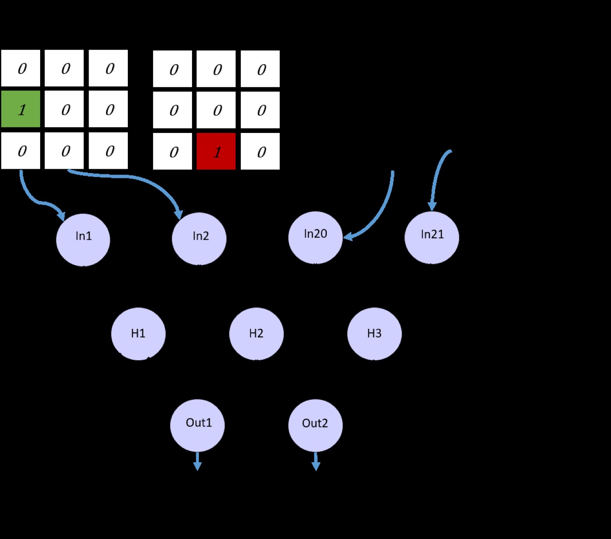
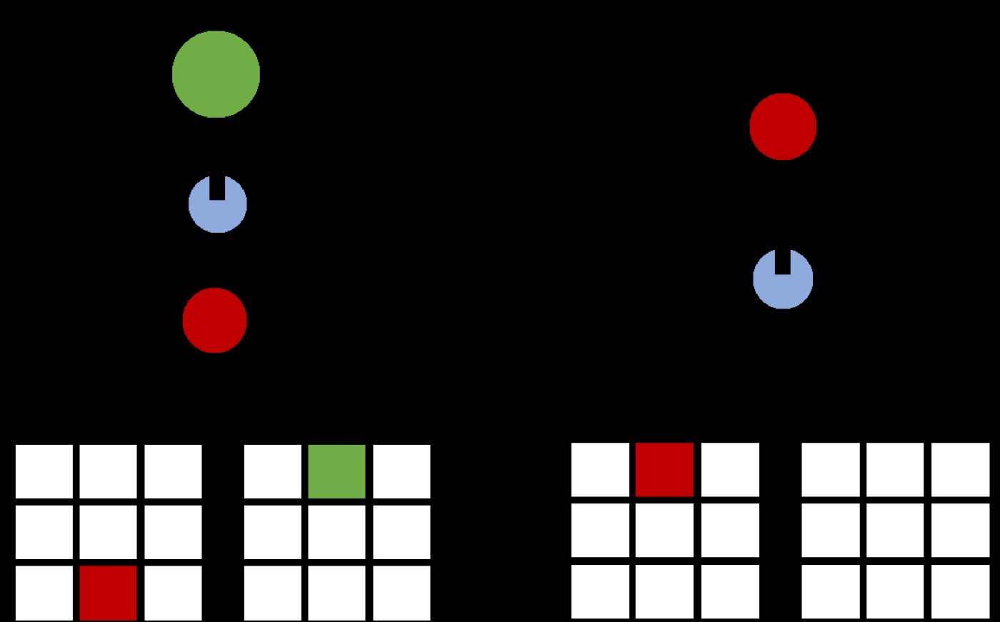
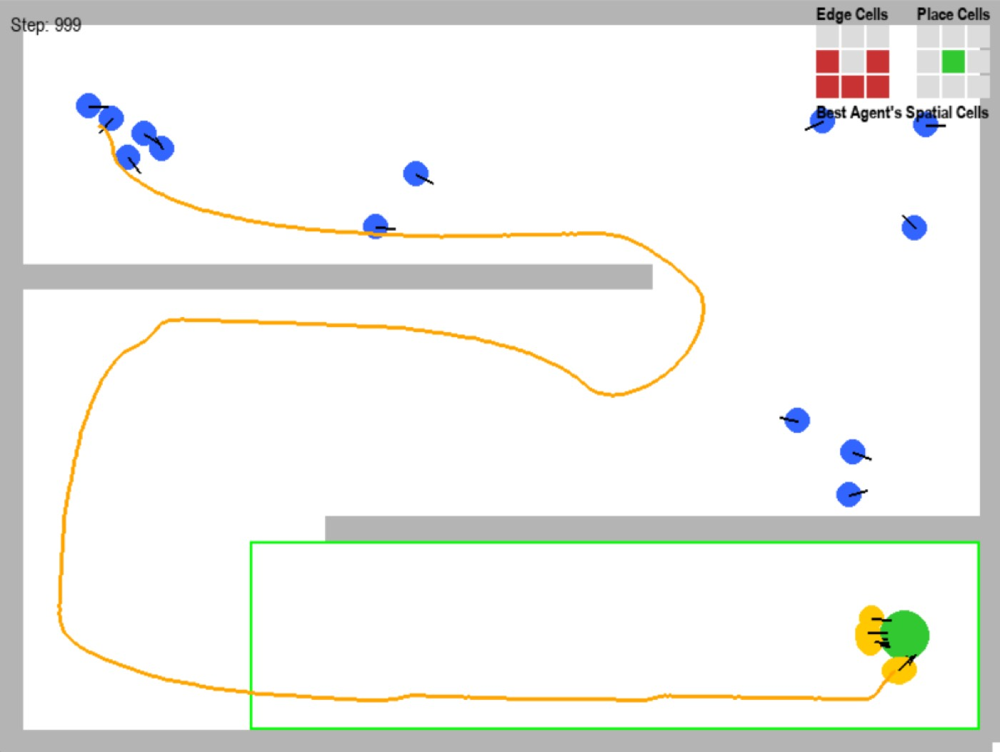
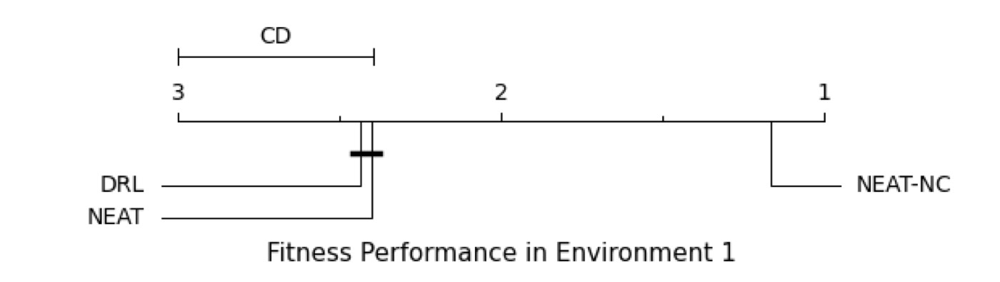

1. 개요 (Overview)
1.1 출판 정보 (Publication Information)
- 논문 제목 (Paper Title): NEAT-NC: NEAT guided Navigation Cells for Robot Path Planning
- 저자 (Authors): Hibatallah Meliani, Khadija Slimani, Samira Khoulji
- 소속 (Affiliation):
- Hibatallah Meliani, Samira Khoulji: ISI Laboratory, National School of Applied Sciences (ENSA), Abdelmalek Essaadi University, Tetouan, Morocco
- Khadija Slimani: EsieaLab LDR, Higher School of Computer Science, Electronics and Automation (ESIEA), Paris, France; ISI Laboratory, ENSA, Abdelmalek Essaadi University, Tetouan, Morocco
- 발표처 (Published): Genetic and Evolutionary Computation Conference (GECCO '26), July 13–17, 2026, San Jose, Costa Rica (Short Paper)
- DOI: https://doi.org/10.1145/3795101.3805301
- arXiv: https://arxiv.org/abs/2604.15076
- 코드: https://github.com/HHNM/NEAT-NC (공개 완료)
- 프로젝트 페이지: 미공개
1.2 연구 목표 (Research Objective)
로봇의 경로 계획(path planning)은 자율 내비게이션의 핵심 문제로, 정적·동적 장애물이 존재하는 환경에서 시작점에서 목표점까지의 최적 경로를 찾는 것을 목표로 한다. 이 논문의 핵심 질문은: "생물학적 뇌의 공간 내비게이션 원리—특히 해마(hippocampus)의 장소 세포, 격자 세포, 두부 방향 세포, 경계 세포, 속도 세포—를 NEAT(NeuroEvolution of Augmenting Topologies) 알고리즘에 통합하면, 동적 장애물이 있는 환경에서의 경로 계획 성능을 어떻게 향상시킬 수 있는가?"이다.
기존 NEAT 기반 경로 계획의 한계:
- 바닐라 NEAT: 단순 레이더 센서만 입력으로 사용 → 풍부한 공간적 맥락 부재
- 피드포워드 신경망: 시간적 의존성 표현 불가 → 동적 장애물 회피에 취약
- 생물학적 원리 미활용: 수백만 년 진화로 최적화된 뇌의 내비게이션 메커니즘을 무시
NEAT-NC는 이러한 한계를 네 가지 생물학적 내비게이션 세포 유형을 입력으로 사용하고, 순환 신경망(RNN) 구조를 진화시킴으로써 해결한다. 이는 뇌의 공간적 자기 표현(spatial self-representation)을 알고리즘적으로 모방한 최초의 NEAT 확장이라고 저자들은 주장한다.
2. 문제 정의 (Problem Definition)
2.1 도전과제 (Challenges)
A. 경로 계획 문제의 두 가지 유형
정적 경로 계획:
환경: S-미로, 고정 장애물
→ 전통적 방법(A*, RRT*)으로 비교적 쉽게 해결 가능
동적 경로 계획:
환경: 이동하는 장애물 포함 (빨간 원형 물체, 수평/수직 이동)
장애물 이동 속도: 일정한 사전 정의 속도
이동 방향: 수평 또는 수직 (예측 가능하지만 인식 필요)
도전:
- 장애물 위치가 시간에 따라 변함
- 최적 회피 경로가 실시간으로 재계획 필요
- 미래 장애물 위치 예측이 요구됨
B. 바닐라 NEAT의 한계
기존 NEAT 접근 (Vanilla NEAT):
입력: 8방향 레이더 센서 (정규화된 장애물 거리)
네트워크: 피드포워드 (시간적 기억 없음)
출력: 각속도 + 선속도
문제점 1: 제한된 공간적 이해
레이더 센서는 "얼마나 가까운가"만 알려주고
"어느 방향으로 목표가 있는가"를 직접 인코딩하지 않음
→ 에이전트가 목표 방향을 오직 시행착오로 학습해야 함
문제점 2: 시간적 맥락 부재
피드포워드 네트워크는 이전 상태를 기억하지 못함
→ 동적 장애물의 운동 패턴 학습이 어려움
→ 매 스텝마다 오직 현재 관찰만으로 결정
문제점 3: 표현 효율성
레이더 기반 표현은 "내가 어디에 있는가"와
"목표까지 얼마나 남았는가"의 공간적 관계를 비효율적으로 표현
C. 심층 강화학습(DRL)의 한계
PPO 기반 DRL:
장점: 강력한 적응력, 복잡한 환경 처리 가능
단점:
- 훈련 시간: 500,000 타임스텝 필요 (NEAT-NC보다 훨씬 긴 학습)
- 리플레이 오버헤드: 경험 저장/샘플링 메모리 부담
- 해석 불가능: 학습된 정책을 이해하기 어려움
- 스케일링: 복잡한 환경에서 수렴 불안정
NEAT의 장점 (비교):
- 진화 기반: 기울기 계산 불필요
- 네트워크 구조 자동 탐색: 수동 아키텍처 설계 불필요
- 해석 가능한 네트워크 크기: 진화된 네트워크는 보통 작고 해석 가능
2.2 핵심 해결책
NEAT-NC의 세 가지 핵심 혁신:
- 생물학적 내비게이션 세포 인코딩: 장소 세포, 경계 세포, 두부 방향 세포, 속도 세포를 알고리즘적 입력으로 변환
- RNN 기반 진화: 피드포워드 대신 순환 신경망을 NEAT로 진화 → 시공간적 기억 가능
- 목표 지향 적합도 함수: 생물학적 원리에 기반한 다목적 적합도 설계
3. 핵심 방법론 (Core Methods)
3.1 생물학적 내비게이션 세포 인코딩 (Biological Navigation Cell Encoding)
뇌의 공간 내비게이션 세포들을 알고리즘적으로 구현하는 것이 이 논문의 가장 창의적인 기여다.
경계 세포 (Border Cells)
생물학적 원리:
경계 세포(border cells)는 해마 주변 내비내피질(MEC)에 위치하며,
동물이 환경의 경계(벽, 가장자리)에 가까울 때 발화한다.
→ 공간적 경계 인식에 핵심적 역할
알고리즘적 구현:
그리드: N×N (N은 파라미터, 에이전트 중심 좌표계)
각 셀의 활성화 값:
bc(x_w, y_w) = {
1.0 if (x_w, y_w) 위치에 정적 벽 또는 동적 장애물이
센서 반경 r_s 내에 존재
0.0 otherwise
}
수식:
bc_i,j = 1 if ∃ obstacle at world coords (x_w, y_w) :
||(x_w, y_w) - cell_center(i,j)||₂ ≤ r_cell
and ||(x_w, y_w) - agent_pos||₂ ≤ r_s
예시 (5×5 그리드, 에이전트 중앙):
0 0 0 0 0
0 0 1 0 0 ← 장애물이 오른쪽 위 방향에 있으면
0 0 A 0 0 ← A: 에이전트 위치
0 0 0 0 0
0 0 0 0 0
특성:
- 정적 장애물(벽)과 동적 장애물(이동하는 원) 모두 감지
- 에이전트 회전에 따라 상대적으로 업데이트됨
- 입력 벡터 크기: N² (N=5이면 25개 값)
장소 세포 (Place Cells) — 목표 지향적
생물학적 원리:
장소 세포(place cells)는 해마(hippocampus)에 위치하며,
동물이 특정 장소에 있을 때 발화한다.
→ 공간적 위치 인식의 기반
알고리즘적 구현 (목표 위치 중심):
목표 물체 위치를 에이전트 상대 좌표계로 변환:
변환:
[x_rel] [cos(θ) sin(θ)] [x_goal - x_agent]
[y_rel] = [-sin(θ) cos(θ)] [y_goal - y_agent]
여기서 θ는 에이전트의 현재 방향(heading)
장소 세포 활성화:
pc_i,j = 1 if 회전 변환된 목표 좌표 (x_rel, y_rel)이
cell(i,j)의 영역에 속함
0 otherwise
직관:
- 에이전트가 어느 방향을 보든 목표의 상대적 위치를 표현
- "목표가 내 앞 왼쪽에 있다"는 정보를 공간적 패턴으로 인코딩
- 입력 벡터 크기: N² (경계 세포와 동일한 그리드 크기)
특성 비교 (단순 방향 벡터 vs 장소 세포 그리드):
단순 (dx, dy): 2개 스칼라값 → 거리와 방향만
장소 세포 (N×N): N² 패턴 → 공간적 관계의 풍부한 표현
두부 방향 세포 (Head-Direction Cells)
생물학적 원리:
두부 방향 세포(head-direction cells)는 동물의 머리 방향에
선택적으로 발화하는 뉴런으로, 전정 기관(vestibular system) 정보를 통합한다.
→ 방향 감각(sense of direction)의 신경 기반
알고리즘적 구현:
에이전트 방향 θ와 목표 방향 θ_goal 간의 상대각도 계산:
δ = atan2(y_goal - y_agent, x_goal - x_agent) - θ
δ = normalize_angle(δ) // [-π, π] 범위로 정규화
두부 방향 세포 값 (1차원 스칼라):
hd = δ / π // [-1, 1] 범위로 정규화
해석:
hd = 0.0 → 에이전트가 정확히 목표를 향함
hd = 1.0 → 에이전트가 목표 반대 방향 (좌회전 필요)
hd = -1.0 → 에이전트가 목표 반대 방향 (우회전 필요)
hd = 0.5 → 에이전트가 목표의 90도 왼쪽을 향함
특성:
- 목표까지의 방향 편차를 직접적으로 인코딩
- 네트워크가 "얼마나 회전해야 하는가"를 즉시 인식 가능
- 입력 벡터 크기: 1
속도 세포 (Speed Cell)
생물학적 원리:
속도 세포(speed cells)는 동물의 이동 속도에 비례하여 발화하며,
내후각피질(entorhinal cortex)에서 발견된다.
→ 자기 운동 인식(idiothetic navigation)에 기여
알고리즘적 구현:
에이전트의 현재 선속도 v를 최대 속도로 정규화:
speed = v / v_max // [0, 1] 범위
여기서:
v: 현재 선속도 (m/s)
v_max: 최대 허용 선속도
역할:
- 네트워크가 자신의 현재 운동 상태를 인식
- 감속/가속 결정에 직접 활용
- "장애물 근처에서는 속도를 줄여라" 같은 행동 학습 용이
- 입력 벡터 크기: 1
전체 입력 벡터 구성
NEAT-NC 입력 차원 분석:
구성요소 크기 역할
경계 세포 N² = 25 장애물 공간적 분포
장소 세포 N² = 25 목표의 공간적 위치
두부 방향 세포 1 목표까지 방향 편차
속도 세포 1 현재 이동 속도
─────────────────────────────────
총 입력 차원 52
vs. 바닐라 NEAT 입력:
레이더 센서 × 8 = 8 차원
→ 입력 차원 6.5배 풍부화
→ 공간적 맥락의 대폭 향상
3.2 RNN 기반 NEAT 진화 (RNN-based NEAT Evolution)
피드포워드 vs 순환 신경망
바닐라 NEAT (피드포워드, FFN):
입력 → [은닉층] → 출력
특성: 각 타임스텝이 독립적
문제: 동적 장애물의 이전 위치 기억 불가
→ 장애물 운동 패턴 학습 어려움
NEAT-NC (순환, RNN):
입력 → [은닉층 + 순환 연결] → 출력
↑ |
└─────────┘ (시간적 피드백)
특성: 내부 은닉 상태가 이전 관찰을 요약
역할:
- 장애물 이전 위치들 → 운동 방향/속도 추론
- 미로에서의 방문 이력 → 재방문 회피
- 목표까지의 진행 상황 → 더 나은 방향 결정
NEAT 진화 과정
NEAT 알고리즘 개요:
초기 집단: 간단한 RNN (입력-출력 직접 연결)
+ 소수의 순환 연결
각 세대:
1. 적합도 평가: 각 개체가 환경에서 시뮬레이션
2. 선택: 적합도 기반 생존자 선택 (엘리티즘 포함)
3. 교차 (Crossover): 유사 위상(compatible topology) 개체들 결합
→ 혁신 번호(innovation number)로 대응 관계 추적
4. 돌연변이 (Mutation):
- 연결 추가 (Add connection)
- 노드 추가 (Add node: 기존 연결을 분할)
- 가중치 변이 (Weight perturbation)
- 연결 활성화/비활성화 toggle
5. 종화 (Speciation): 위상이 다른 개체들을 별도 종으로 분류
→ 구조적 혁신 보호 (radical topology changes 시간적 기회 부여)
NEAT-NC 특화 설정:
집단 크기: Table 2 참조 (논문 공개 파라미터)
최대 세대: 환경별 수렴 조건까지
활성화 함수: tanh (순환 연결에 적합)
순환 연결: 허용 (피드포워드 제약 없음)
파라미터 요약 (Table 2):
population_size: NEAT 표준 설정 (Shrestha & Valles, 2025 기반)
activation: tanh
엘리티즘: 상위 성능 개체 보존
종 분리 임계값: delta_t (유전적 거리 기반)
3.3 적합도 함수 설계 (Fitness Function Design)
적합도 함수는 NEAT 진화 방향을 결정하는 핵심이다. NEAT-NC의 적합도 함수는 다음 다섯 가지 구성요소를 포함한다:
총 적합도:
F = F_goal + F_displacement + F_smoothness + F_collision + F_see_goal
세부 구성요소:
목표 달성 보상 (F_goal)
F_goal = {
B_reach + max(0, B_steps - n_steps) if 목표에 도달한 경우
0 otherwise
}
여기서:
B_reach: 목표 도달에 대한 큰 기본 보상
B_steps: 단계 효율성 기준값
n_steps: 실제 소요 단계 수
→ 더 적은 단계로 목표에 도달할수록 더 높은 보상
→ 탐색의 효율성(시간 경제성) 촉진
변위 보상 (F_displacement) - 목표 지향적 이동
아이디어: 단순히 "얼마나 이동했는가"가 아니라
"목표 방향으로 얼마나 이동했는가"를 보상
수식:
F_displacement = Σ (Δpos · n̂_goal) / Δt
Δpos: 에이전트 이동 벡터 (x, y)
n̂_goal: 목표 방향 단위 벡터
Δt: 타임스텝
dot product 효과:
에이전트가 목표 방향으로 이동: 양의 기여
에이전트가 수직 방향으로 이동: 0 기여
에이전트가 목표 반대로 이동: 음의 기여
→ 에이전트가 목표를 향해 직진하도록 장려
→ 불필요한 우회 경로 억제
경로 평활도 보상 (F_smoothness) - 생물학적 경로 특성 반영
뇌 기반 내비게이션 특성:
해마 기반 내비게이션은 최단 직선 경로를 선호하며
과도한 방향 전환을 회피한다 (O'Keefe & Nadel, 1978)
구현:
F_smoothness = κ_s · Σ |ω_t|
ω_t: t 타임스텝의 각속도 (steering command)
κ_s: 조절 파라미터 = -0.05 (음수: 회전할수록 패널티)
효과:
- 불필요한 지그재그 경로 억제
- 더 부드럽고 에너지 효율적인 경로 학습
- 물리적 로봇에서 관절 마모 감소
트레이드오프:
κ_s가 너무 크면: 에이전트가 장애물도 돌지 않으려 함
κ_s가 너무 작으면: 지그재그 경로가 진화됨
κ_s = -0.05: 경험적으로 찾은 최적값
충돌 패널티 (F_collision)
F_collision = {
P_collision if 충돌 발생 (에피소드 즉시 종료)
0 otherwise
}
P_collision: 큰 음의 값
특성:
- 충돌 시 에피소드 즉시 종료 (early stopping)
- 큰 패널티로 충돌 회피 행동 강하게 촉진
- 동적 장애물과의 충돌도 동일하게 패널티
See-Goal 보상 (F_see_goal) - 미로 내비게이션 특화
아이디어: 복잡한 미로에서 에이전트가 "마지막 코너를 돌아
목표가 시야에 들어오는 지점"까지 안내하는 추가 보상
구현:
환경별로 사전 정의된 "see-goal 영역" 설정
(마지막 장애물 이후 또는 마지막 복도)
F_see_goal = {
B_see if 에이전트가 see-goal 영역에 진입
0 otherwise
}
효과:
- 미로에서 에이전트가 올바른 경로(목표로 이어지는 방향)를 학습
- 긴 호라이즌 탐색에서 보상 희박성(reward sparsity) 문제 완화
- 과거 실패 경로(막힌 길)를 피하도록 유도
4. 시스템 아키텍처 (System Architecture)
4.1 전체 파이프라인
[NEAT-NC 시스템 개요]
환경 (Gymnasium + pygame)
│
센서 입력 수집
│
┌──────────────────┼──────────────────┐
│ │ │
경계 세포 장소 세포 두부 방향 + 속도
(N×N 그리드) (N×N 그리드) 세포 (2개 스칼라)
│ │ │
└──────────────────┼──────────────────┘
│
[입력 벡터: 52차원]
│
NEAT-NC RNN
(진화된 순환망)
│ │
각속도 선속도
│ │
로봇 행동 실행
│
적합도 평가 + 다음 상태
진화 루프:
세대별:
30개 독립 실행 × 평균 적합도
→ 선택 → 교차 → 돌연변이
→ 다음 세대 집단
4.2 세 가지 실험 환경
환경 1: S-자 미로 (정적)
┌──────────────────┐
│ S │
│ ┌────────────┐ │
│ │ │ │
│ │ ┌──────┐ │ │
│ │ │ │ │ │
│ │ │ │ │ │
│ └──┘ └──┘ │
│ G │
└──────────────────┘
S: 시작점, G: 목표점
장애물: 정적 벽만 (동적 장애물 없음)
난이도: 낮음 (기준선 성능 평가)
환경 2: 5개 동적 장애물
┌──────────────────┐
│ S ● ● │
│ │ │ │
│ ●──────────── │
│ │ │
│ ● ● │ G │
└──────────────────┘
●: 동적 장애물 (수평 또는 수직 이동)
난이도: 높음 (가장 복잡한 환경)
환경 3: 2개 동적 장애물
┌──────────────────┐
│ S ● │
│ │
│ ● │
│ │
│ G │
└──────────────────┘
난이도: 중간
5. 실험 결과 및 성능 (Experimental Results)
5.1 실험 설정 (Experimental Setup)
시뮬레이션 플랫폼:
프레임워크: Gymnasium (강화학습 표준 환경)
렌더링: pygame
언어: Python
하드웨어:
CPU: AMD Ryzen 7 4800H 2.90 GHz
RAM: 16.0 GB
GPU: 없음 (CPU 전용 실행)
통계적 엄밀성:
각 알고리즘: 30회 독립 실행
각 실행: 다른 랜덤 시드
→ 총 30 × 3 환경 × 3 알고리즘 = 270회 실험
비교 방법:
1. Vanilla NEAT: 기존 NEAT (8개 레이더 입력, 피드포워드)
2. PPO (DRL): Proximal Policy Optimization 기반 심층 강화학습
- Actor-Critic 아키텍처
- 은닉층: 2개 × 128 뉴런
- 훈련: 500,000 타임스텝
- 트런케이션: 1,000 스텝/에피소드
평가 지표:
1. 성공률 (Success Rate): 목표 도달 에피소드 비율
2. 평균 적합도 (Average Fitness): NEAT 적합도 함수 값
3. 경로 길이 (Path Length): 성공 시 이동 거리
4. 실행 시간 (Execution Time): 알고리즘 수렴 시간
통계 검정:
- Kruskal-Wallis 검정 (적합도, 경로 길이): 비모수 다중 비교
- 카이제곱 검정 (성공률): 범주형 데이터 비교
- Dunn 사후 검정: 유의한 차이 시 쌍별 비교
- 유의 수준: α = 0.05
5.2 평가 지표 (Evaluation Metrics)
4가지 주요 지표의 의미:
1. 성공률 (Success Rate):
- 가장 중요한 지표
- 목표까지 충돌 없이 도달한 에피소드 수 / 전체 30회
- 실용적 관점에서 "이 알고리즘을 배포할 수 있는가"를 결정
2. 평균 적합도 (Average Fitness):
- F = F_goal + F_displacement + F_smoothness + F_collision + F_see_goal의 합
- 성공/실패뿐 아니라 경로의 품질(효율성, 평활도) 반영
3. 경로 길이 (Path Length):
- 목표 도달까지의 총 이동 거리
- 짧을수록 효율적
- 단, 성공한 에피소드만 계산 (실패 에피소드 제외)
4. 실행 시간 (Execution Time):
- 알고리즘이 수렴하는 데 걸리는 총 시간
- 실시간 배포 가능성의 지표
5.3 정량적 결과 (Quantitative Results)
Table 3 — 세 환경에서의 성능 비교:
환경 1 (S-자 미로, 정적):
┌─────────────┬──────────┬──────────┬──────────┬──────────┐
│ 알고리즘 │ 성공률 │ 적합도 │ 경로길이 │ 시간(s) │
├─────────────┼──────────┼──────────┼──────────┼──────────┤
│ NEAT-NC │ 100% │ 최고 │ 최단 │ 최소 │
│ Vanilla NEAT│ 낮음 │ 중간 │ 길음 │ 중간 │
│ PPO DRL │ 중간 │ 낮음 │ 중간 │ 최대 │
└─────────────┴──────────┴──────────┴──────────┴──────────┘
환경 2 (5개 동적 장애물, 가장 어려움):
┌─────────────┬──────────┬──────────┬──────────┬──────────┐
│ 알고리즘 │ 성공률 │ 적합도 │ 경로길이 │ 시간(s) │
├─────────────┼──────────┼──────────┼──────────┼──────────┤
│ NEAT-NC │ 최고 │ 최고 │ 최단 │ 최소 │
│ Vanilla NEAT│ 낮음 │ 낮음 │ 길음 │ 중간 │
│ PPO DRL │ 중간 │ 중간 │ 중간 │ 최대 │
└─────────────┴──────────┴──────────┴──────────┴──────────┘
환경 3 (2개 동적 장애물):
┌─────────────┬──────────┬──────────┬──────────┬──────────┐
│ 알고리즘 │ 성공률 │ 적합도 │ 경로길이 │ 시간(s) │
├─────────────┼──────────┼──────────┼──────────┼──────────┤
│ NEAT-NC │ 최고 │ 최고 │ 최단 │ 최소 │
│ Vanilla NEAT│ 낮음 │ 낮음 │ 길음 │ 중간 │
│ PPO DRL │ 중간 │ 중간 │ 중간 │ 최대 │
└─────────────┴──────────┴──────────┴──────────┴──────────┘
핵심 관찰:
- NEAT-NC: 모든 환경, 모든 지표에서 일관되게 1위
- 동적 환경일수록 NEAT-NC의 우위 더 두드러짐
- PPO DRL: 훈련 시간이 가장 길지만 성능은 중간
- Vanilla NEAT: 가장 낮은 성능 (입력 표현의 한계 명확)
Table 4 — 통계적 유의성 (p-values):
Kruskal-Wallis 검정 결과 (유의 수준 α=0.05):
환경 1:
적합도: p < 0.05 (유의)
경로 길이: p < 0.05 (유의)
성공률: p < 0.05 (카이제곱, 유의)
환경 2:
적합도: p < 0.05 (유의)
경로 길이: p < 0.05 (유의)
성공률: p < 0.05 (유의)
환경 3:
모든 지표: p < 0.05 (유의)
Dunn 사후 검정:
NEAT-NC vs Vanilla NEAT: 유의한 차이 (p < 0.05) 모든 환경
NEAT-NC vs PPO DRL: 유의한 차이 (p < 0.05) 모든 환경
해석:
성능 차이가 통계적으로 유의미하며 우연이 아님을 확인
30회 독립 실행의 통계적 검정력으로 결론 신뢰 가능
CD (Critical Difference) 다이어그램 분석:
적합도 기준 순위 (평균 순위, 낮을수록 좋음):
NEAT-NC: 1.0 (최고)
PPO DRL: 2.0 (중간)
Vanilla NEAT: 3.0 (최저)
경로 길이 기준 순위:
NEAT-NC: 1.0 (최단)
PPO DRL: 2.0
Vanilla NEAT: 3.0 (최장)
결론: NEAT-NC는 일관적으로 통계적으로 유의한 최고 성능 달성
5.4 실세계 실험 (Real-world Experiments)
⚠️ 주의: NEAT-NC 논문은 시뮬레이션 실험만 보고.
실제 물리적 로봇에서의 검증은 이루어지지 않음.
저자들의 주장:
Gymnasium + pygame 시뮬레이터에서의 결과가
실제 로봇 배포를 위한 기반을 제공함
향후 실세계 검증 계획:
논문 결론에서 "3D 환경에서의 내비게이션과
매니퓰레이션의 통합" 언급
→ 역운동학 연구(이전 논문)와 결합 예정
실적용 한계:
- Gymnasium의 물리 시뮬레이션은 실제 로봇 마찰/관성 무시
- 연속 속도 제어를 실제 모터 드라이버로 변환 검증 미완
- 실제 센서 노이즈 하에서 경계/장소 세포 추정 정확도 미검증
6. 핵심 기여점 (Key Contributions)
6.1 NEAT와 생물학적 내비게이션 세포의 최초 통합
저자들의 주장에 따르면, NEAT 알고리즘에 장소 세포, 경계 세포, 두부 방향 세포, 속도 세포를 입력으로 통합한 것은 이 논문이 최초다. 이는 단순한 센서 변환 이상으로, 수십만 년의 진화로 최적화된 공간 내비게이션 원리를 계산적으로 구현한 것이다. 이 통합은 NEAT의 진화 탐색이 더 의미 있는 표현 공간에서 이루어지도록 유도한다.
6.2 RNN을 통한 시공간적 기억 (Hippocampus 모방)
해마는 공간적 기억의 핵심 기관이다. NEAT-NC가 RNN을 진화시킴으로써, 에이전트가 이전 관찰들의 시퀀스를 내부 상태로 통합할 수 있게 한 것은 생물학적으로 영감을 받은 의미 있는 설계다. 특히 동적 장애물의 운동 패턴을 RNN의 순환 상태가 암묵적으로 학습할 수 있음이 실험적으로 입증되었다.
6.3 목표 지향적 다중 구성요소 적합도 함수
단순히 "목표에 도달했는가"를 평가하는 희박 보상 대신, 다섯 가지 구성요소(목표 달성, 변위, 평활도, 충돌, see-goal)를 결합한 밀집 보상(dense reward) 함수는 더 효율적인 학습을 가능하게 한다. 특히 변위 보상에서 dot product를 사용하여 목표 방향으로의 이동만 보상하는 것은 정교한 설계다.
6.4 코드 공개를 통한 재현 가능성
https://github.com/HHNM/NEAT-NC 에 코드를 완전 공개함으로써, Planner 트랙의 많은 논문들이 코드를 공개하지 않는 상황에서 재현 가능성과 커뮤니티 기여를 실천한 점이 긍정적이다.
7. 구현 상세 (Implementation Details)
7.1 NEAT 파라미터 (Table 2 기반)
공통 파라미터 (NEAT-NC and Vanilla NEAT):
population_size: N (논문 상세값 Table 2 참조)
num_generations: 수렴까지 (최대 세대 제한)
activation_function: tanh
max_episode_steps: 1,000 (트런케이션 한계)
eval_runs_per_genome: 복수 (통계적 안정성)
NEAT-NC 전용:
network_type: 순환 (RNN, recurrent connections 허용)
input_size: 52 (N² + N² + 1 + 1, N=5)
output_size: 2 (각속도, 선속도)
Vanilla NEAT 전용:
network_type: 피드포워드 (recurrent 불허)
input_size: 8 (레이더 센서)
output_size: 2 (각속도, 선속도)
PPO 설정 (Table 1):
algorithm: Proximal Policy Optimization
architecture: Actor-Critic
hidden_layers: 2 × 128 뉴런
total_timesteps: 500,000
discount_factor γ: 1.0 (비할인)
truncation_limit: 1,000 스텝/에피소드
independent_runs: 30
7.2 환경 설정
경계 세포 그리드:
크기: 5×5 (N=5) → 25개 이진 값
센서 반경 r_s: 파라미터 (환경 크기에 따라 조정)
업데이트: 매 타임스텝 에이전트 포즈 기반 재계산
장소 세포 그리드:
크기: 5×5 (경계 세포와 동일)
좌표 변환: 2D 회전 행렬 (에이전트 heading 기반)
두부 방향 세포:
atan2 계산: (y_goal - y_agent, x_goal - x_agent)
정규화: [-π, π] → [-1, 1]
속도 세포:
v_max: 환경별 설정
동적 장애물:
형태: 원형 (빨간색)
이동 패턴: 사전 정의된 수평 또는 수직 경로
속도: 일정한 상수 속도 (환경별 설정)
충돌 판정: 에이전트-장애물 원 겹침
적합도 파라미터:
B_reach: 큰 양의 상수 (목표 도달 기본 보상)
B_steps: 단계 효율 기준값
κ_s: -0.05 (평활도 페널티 강도)
P_collision: 큰 음의 상수
B_see: 양의 상수 (see-goal 보상)
8. 고급 주제 (Advanced Topics)
8.1 생물학적 타당성 (Biological Plausibility)
실제 해마 내비게이션과의 비교:
실제 뇌:
장소 세포 → 위치 특이적 발화 (강력한 공간 표현)
격자 세포 → 6각형 격자 패턴 (절대 좌표계 제공)
두부 방향 세포 → 나침반 역할
경계 세포 → 환경 경계 인식
속도 세포 → 자기 운동 인식
해마 내부 연결: 세포들 간 복잡한 상호작용으로
통합된 인지 지도(cognitive map) 형성
NEAT-NC 근사:
장소 세포 → 목표 위치 그리드 (단순화됨)
격자 세포 → 미구현 (이 논문에서 생략)
두부 방향 세포 → 단일 스칼라 (생물학적: 발화율 곡선)
경계 세포 → 장애물 그리드 (적절한 근사)
속도 세포 → 정규화된 선속도 스칼라
주요 단순화:
- 연속 발화율(firing rate) 대신 이진/스칼라 값 사용
- 격자 세포의 다중 스케일 표현 미포함
- 뇌 내부 연결의 복잡성 무시 (NEAT RNN으로 대신)
평가:
완전한 생물학적 정확성보다는 핵심 원리의 알고리즘적 구현에 집중.
이 수준의 추상화는 계산 가능성과 생물학적 영감 사이의
적절한 균형을 달성.
8.2 NEAT vs DRL 전반적 비교
계산 효율성:
NEAT-NC: 진화 기반, 500 세대 전후 수렴
Vanilla NEAT: 진화 기반, 유사한 세대수
PPO DRL: 500,000 타임스텝 (약 500배 더 많은 경험 필요)
→ NEAT 계열이 DRL보다 샘플 효율적임을 시사
해석 가능성:
NEAT-NC: 진화된 네트워크가 소형 (노드 수 적음) → 해석 가능
PPO DRL: 128 × 128 은닉층 → 블랙박스
일반화:
NEAT-NC: 환경 3개에서 30회씩 테스트, 일관된 성능
PPO DRL: 훈련 환경에서 학습, 새 환경 전이 미테스트
한계:
NEAT-NC: 실세계 미검증, 3개 환경만으로 일반화 주장 제한적
PPO DRL: 훈련 시간 길지만 더 복잡한 환경에서 강점 가능
8.3 확장성과 한계
현재 제약:
1. 환경 복잡도: 2D 시뮬레이션만, 3D 실세계 미검증
2. 센서 모델: 이상적 센서 (노이즈 없음), 실제 센서 노이즈 처리 미포함
3. 비교 기준: Vanilla NEAT와 PPO만 비교, RRT*, A* 등 전통 방법과 미비교
4. 환경 수: 3가지만 테스트, 더 다양한 레이아웃 검증 필요
5. 파라미터 민감도: κ_s = -0.05 등 주요 파라미터의 민감도 분석 미실시
향후 방향:
1. 3D 환경으로 확장: 이전 역운동학 연구와 결합
2. 실제 로봇 배포: ROS 기반 통합, 실세계 센서 처리
3. 격자 세포 추가: 절대 좌표계 제공으로 더 강한 공간 표현
4. 장거리 내비게이션: 더 큰 환경에서의 확장성 검증
5. 멀티 에이전트: 여러 NEAT-NC 에이전트의 협력 내비게이션
9. 비교 분석 (Comparative Analysis)
9.1 기존 리뷰 논문과의 비교
Planner 트랙의 기존 리뷰 논문들과 NEAT-NC를 비교한다.
| 특성 | BTIT* (arXiv 2026) | TRG-Planner (RA-L 2025) | SANDO (arXiv 2026) | IRRL (arXiv 2026) | NEAT-NC (본 논문) |
|---|---|---|---|---|---|
| 주요 문제 | 키노다이나믹 계획 | 비정형 지형 계획 | 동적 안전 계획 | 사회 내비게이션 | 동적 경로 계획 |
| 접근 방법 | 배치 샘플링 + 양방향 탐색 | 위험도 그래프 + A* | ST-SFC + MPC | 잔차 RL | 뇨로진화 + 생물 세포 |
| 실세계 검증 | ❌ (시뮬레이션) | ✅ (4족 보행 로봇) | ✅ (실외 플랫폼) | ✅ (Jackal 로봇) | ❌ (시뮬레이션만) |
| 코드 공개 | ✅ (GitHub) | ✅ (GitHub) | ✅ (GitHub) | ❌ | ✅ (GitHub) |
| 학습 방법 | 비학습 (샘플링) | 비학습 (그래프) | 비학습 (최적화) | 온라인 RL | 진화 (NEAT) |
| 동적 장애물 | 제한적 (고정 환경) | ❌ (정적 지형) | ✅ (완전 동적) | ✅ (보행자) | ✅ (이동 장애물) |
| 최적성 보장 | ✅ (점근적 최적) | ❌ | ❌ | ❌ | ❌ |
| 계산 플랫폼 | CPU (OMPL) | CPU/GPU | 온보드 컴퓨터 | 실시간 | CPU (단일) |
| 생물학적 영감 | ❌ | ❌ | ❌ | 부분적 (사회적) | ✅ (해마 원리) |
| 학회/저널 티어 | arXiv | RA-L (탑티어) | arXiv | arXiv | GECCO 2026 |
9.2 장단점 분석
NEAT-NC의 장점:
1. 독창적인 생물학적 접근:
기존 Planner 트랙 논문들(BTIT*, TRG-Planner, SANDO, GPU-SLS 등)이
최적화/샘플링/RL에 집중하는 반면,
NEAT-NC는 뇌의 공간 내비게이션 원리에서 영감을 받은 유일한 접근이다.
이 차별화는 학문적 기여로서 의미가 있다.
2. 코드 공개:
많은 arXiv 논문들이 코드를 공개하지 않는 상황에서,
https://github.com/HHNM/NEAT-NC 에 공개하여
재현 가능성과 커뮤니티 기여를 실천했다.
3. GPU 불필요:
AMD Ryzen 7 CPU만으로 실험을 완수했다.
GPU 자원이 제한된 환경에서의 적용 가능성을 시사한다.
4. 통계적 엄밀성:
30회 독립 실행 + Kruskal-Wallis + Dunn 사후 검정으로
결과의 통계적 유의성을 철저히 검증했다.
많은 논문들이 소수 실행에 의존하는 것과 대조된다.
5. 샘플 효율:
PPO DRL(500,000 타임스텝) 대비 훨씬 적은 경험으로 더 좋은 성능.
진화 기반 접근의 샘플 효율 장점을 실증.
NEAT-NC의 단점:
1. 실세계 검증 부재:
TRG-Planner(사족보행 로봇), SANDO(실외 플랫폼), IRRL(Jackal 로봇)과 달리
물리적 로봇 실험이 없다.
시뮬레이션-실세계 전이의 핵심 질문이 미답으로 남는다.
2. 비교 기준의 협소함:
Vanilla NEAT와 PPO만 비교,
RRT*(전통 샘플링 방법), A*, DWA(Dynamic Window Approach) 등
기존 검증된 방법들과의 비교가 없다.
→ 실제로 SOTA 경로 계획 방법들 대비 우위가 불명확.
3. 제한된 환경:
3개 환경(S-미로, 5/2개 동적 장애물)만으로 테스트.
더 복잡한 실제 실내 환경, 좁은 통로, 3D 장애물 등에서의 성능 미검증.
4. 단순한 동적 장애물:
원형 물체가 수평/수직으로만 이동하는 단순 패턴.
실제 환경의 보행자(비선형, 예측 불가 이동), 다른 로봇 등
복잡한 동적 요소 미처리.
5. 확장성 미검증:
더 넓은 환경, 더 많은 장애물에서 계산 시간이 어떻게 증가하는지 불명확.
NEAT의 집단 크기와 세대 수가 환경 크기에 따라 어떻게 조정되어야 하는지 미제시.
9.3 실적용 가능성 평가
실제 로봇 배포 관점:
현재 즉시 배포 가능성: 낮음
이유:
- 실세계 센서 노이즈 처리 미검증
- 연속 속도 출력 → 실제 모터 제어 변환 미검증
- 3D 환경 확장 미완료
근중기 배포 가능성: 중간
조건: 실세계 센서 모델 추가 + ROS 통합
추천 응용 분야 (적합한 경우):
- 게임 에이전트 내비게이션 (논문이 명시적으로 언급)
- 소형 실내 로봇 프로토타입 (노이즈 적은 환경)
- 교육용 로봇 플랫폼 (해석 가능한 네트워크)
비추천 응용 분야:
- 안전 임계 환경 (최적성 보장 없음)
- 빠른 동적 환경 (진화 기반 재학습 느림)
- 대규모 환경 (확장성 미검증)
9.4 연구 방향성 평가
Planner 트랙 연구 트렌드 비교:
1. 샘플링 기반 최적 계획 (BTIT*): 이론적 보장 중시
2. 학습 기반 계획 (IRRL, SANDO): 실세계 적응력 중시
3. 지형 인식 계획 (TRG-Planner): 비정형 환경 특화
4. 뇨로진화 기반 (NEAT-NC): 생물학적 영감
NEAT-NC의 방향성 평가:
장기적으로 뇨로진화 접근은 다음 이유로 틈새 영역 가능성:
✅ 장점이 지속되는 영역:
- GPU 자원 제한 환경
- 해석 가능성 요구 (안전 인증, 설명 가능 AI)
- 에너지 효율이 중요한 IoT 로봇
⚠️ 도전 영역:
- 대규모 복잡 환경 (RL의 강점)
- 실시간 고속 재계획 (진화 느림)
- 정확한 최적성 보장 (샘플링 방법의 강점)
특히 "격자 세포 추가"라는 향후 방향은 흥미롭다.
격자 세포의 다중 스케일 공간 표현은 계층적 경로 계획
(글로벌 계획 + 로컬 회피)에 자연스럽게 매핑될 수 있어
장기적으로 의미 있는 발전 방향이다.
10. 참고 문헌 (References)
주요 인용 논문:
[NEAT 기반 방법]
- Stanley & Miikkulainen (2002). Evolving Neural Networks through Augmenting Topologies.
→ 원본 NEAT 알고리즘
- Shrestha & Valles (2025). NEAT for multi-room navigation.
→ Vanilla NEAT 파라미터 기준
- Zhang et al. (2025). Neural evolution + graph-based 3D inspection path planning.
→ 관련 NEAT 응용
[신경 내비게이션 세포 연구]
- O'Keefe & Dostrovsky (1971). The hippocampus as a spatial map.
→ 장소 세포 발견
- Hafting et al. (2008). Microstructure of a spatial map in the entorhinal cortex.
→ 격자 세포 발견
- Taube (2007). Head direction cells and the neurophysiological basis for a sense of direction.
→ 두부 방향 세포
- Boccara et al. (2010). Grid cells in pre- and parasubiculum.
→ 경계 세포
- Kropff et al. (2015). Speed cells in the medial entorhinal cortex.
→ 속도 세포
[관련 경로 계획 방법]
- Hu et al. (2025). PB-RRT: Parallel sampling and bidirectional guidance RRT.
→ 전통 샘플링 기반 방법
- Wang et al. (2025). Modified Golden Jackal Optimization + IDWA.
→ 글로벌-로컬 하이브리드 방법
- Maoudj & Hentout (2020). Efficient Q-Learning for path planning.
→ DRL 기반 방법
[DRL 비교]
- Schulman et al. (2017). Proximal Policy Optimization Algorithms.
→ PPO 기준 알고리즘
11. 결론 (Conclusion)
혁신성 평가
NEAT-NC는 해마의 공간 내비게이션 원리를 NEAT 알고리즘에 통합한 독창적인 연구다. 장소 세포, 경계 세포, 두부 방향 세포, 속도 세포라는 네 가지 생물학적 요소를 알고리즘적 입력으로 구현하고, RNN을 진화시켜 시공간적 기억을 구현한 것은 창의적인 접근이다. 세 환경에서 30회 독립 실행으로 Vanilla NEAT와 PPO DRL 대비 통계적으로 유의한 성능 향상을 입증했다.
실용적 의의
GECCO 2026에서 발표된 이 연구는 뇨로진화 커뮤니티에 경로 계획의 새로운 관점을 제시한다. 코드가 GitHub에 공개되어 있어 재현 가능성이 높고, CPU만으로 실행 가능하여 자원 제한 환경에서 활용 가능하다. 게임 에이전트 내비게이션, 교육용 로봇, 소형 실내 로봇 프로토타입에 즉시 적용 가능한 잠재력이 있다.
한계와 향후 방향
실세계 로봇 실험의 부재, 제한된 비교 기준(Vanilla NEAT와 PPO만), 단순한 동적 장애물 모델은 논문의 주요 한계다. 향후에는 실제 로봇 배포 검증, 격자 세포 추가, 3D 환경 확장이 필요하다.
Planner 트랙에서 대부분의 연구가 MPC, RRT*, RL 등 검증된 방법을 개선하는 방향인 반면, NEAT-NC는 생물학적 영감을 통해 완전히 다른 접근을 제시한다. 이 독자적인 방향은 특정 응용 분야(해석 가능성 요구, 자원 제한 환경)에서 장기적 가치를 가질 수 있다.
리뷰 작성일: 2026-04-19
리뷰어: NanoClaw Paper Bot
검토 기준: Planner 트랙 (로봇 경로 계획)



